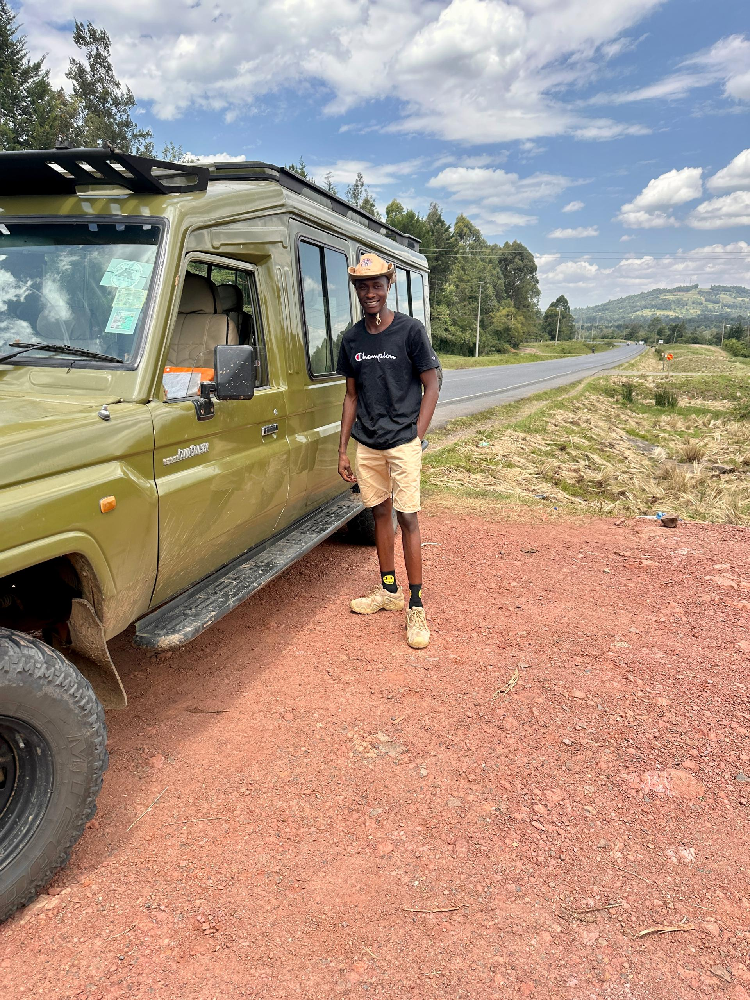

Chichi Blackman
Tree-Climbing Lions of Ishasha
Hey everyone, Chichi Blackman here. One of the coolest things you’ll see on safari in Uganda is the tree-climbing lions in the Ishasha sector of Queen Elizabeth National Park. These lions don’t just stay on the ground like most others — they climb up into the big fig and acacia trees. Why? To escape the heat, get away from biting flies, watch for prey like Uganda kob and buffalo, and simply rest on those strong branches. You’ll often find them up there late morning or in the afternoon. It’s a sight that never gets old, and I love showing it to my guests.

Kasozi
Let’s Talk About Elephants
Jambo, I’m Kasozi. When people come on safari, elephants are always one of the animals they most want to see — and for good reason. Africa has the bigger, stronger African elephants. In Uganda we mostly see the savanna elephants in places like Murchison Falls and Queen Elizabeth. They live in tight family groups led by a wise old matriarch. They communicate with deep rumbles you can sometimes feel more than hear, and they really care for their young. Watching a herd walk past your vehicle with the babies protected in the middle is pure magic. These gentle giants shape the landscape and bring a lot of tourism income that helps protect them.
Brenda
Wildlife Safari Experience
Hello friends, Ibra Hassan speaking. Uganda is truly the Pearl of Africa, and once you come on a game drive with us you’ll understand why. From the open plains of Queen Elizabeth to the river banks of Murchison Falls, every day brings something new — elephants, buffalo, antelope, birds, and if you’re lucky, the big cats. I always tell my guests to keep their cameras ready and their eyes open, because nature doesn’t follow a schedule. That’s the beauty of a real safari.
Chichi Blackman
Safari Experience
This is Chichi again. Every safari is different, but the feeling is always the same — that mix of excitement and peace when you’re out in the wild. Whether we’re tracking tracks in the dust or just sitting quietly watching a herd of buffalo, I make sure my guests feel safe and learn something real about the animals and the land. Come with an open mind and you’ll leave with stories for life.
Kasozi
Gorilla Trekking Adventure
Hi, Kasozi here. Gorilla trekking in Bwindi or Mgahinga is one of the most powerful experiences you can have in Africa. We hike through the thick forest with our porters and trackers until we find a family of mountain gorillas. Then you get one precious hour with them — watching the silverback, the mothers with babies, the youngsters playing. It’s quiet, respectful, and unforgettable. Uganda is one of the best places in the world to do this safely, and I’m proud to guide people on that journey.
Brenda
Wildlife Safari Experience
Ibra Hassan again. The landscapes here in Uganda change so quickly — from thick forest to open savanna to the mighty Nile. On a good day we can see lions, elephants, hippos, crocodiles and hundreds of birds. I love sharing the little details too: why a bird is calling that way, or how elephants use their trunks. Guests always leave knowing more about this beautiful country than when they arrived.
Chichi Blackman
The Rothschild’s Giraffe in Uganda
Chichi here. One animal I’m always happy to point out is the Rothschild’s giraffe. They’re special — tall and elegant, with cream coats and light brown patches, and you can tell them by their white “stockings” on the lower legs with no markings. Uganda has one of the largest remaining wild populations, especially in Murchison Falls National Park. They feed on acacia with those long tongues, live in loose groups called towers, and the males sometimes neck-wrestle. Thanks to protection efforts, their numbers are recovering. Seeing them against the Nile is pure Uganda magic.
Kasozi
Why Lions Climb Trees
Kasozi speaking. People always ask me why the lions in Ishasha climb trees. It’s simple once you spend time with them. The ground gets hot, the tsetse flies are annoying, and from a high branch they get a great view of any prey or other pride members. The big fig and acacia trees have strong horizontal branches perfect for lounging. You’ll see them up there mostly from late morning into the afternoon, sometimes the whole pride including cubs. In the evening they come down to hunt. Ishasha is one of the few places in East Africa where this happens regularly — it’s a real highlight of our southern Queen Elizabeth trips.
Brenda
Lions Resting on the Roads
Ibra here. You’ll often find lions lying right on the road in Murchison Falls or Queen Elizabeth, and guests get so excited. It’s completely natural. The road surface holds the sun’s heat, so it’s warm and comfortable, especially morning and evening. It’s also open, so they can see far, watch for prey or danger, and avoid the thick grass and insects. Lions sleep a lot — sometimes 16 to 20 hours a day — and the road is just a good place to do it. When we come across them we keep a respectful distance, switch off the engine, and enjoy the moment. That’s real safari life.